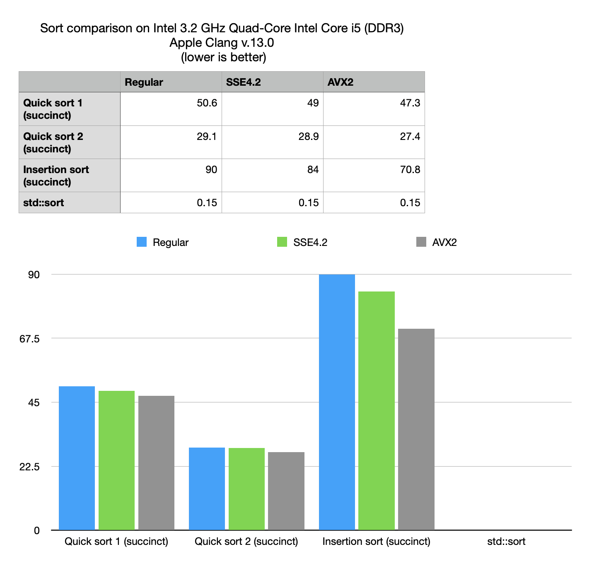
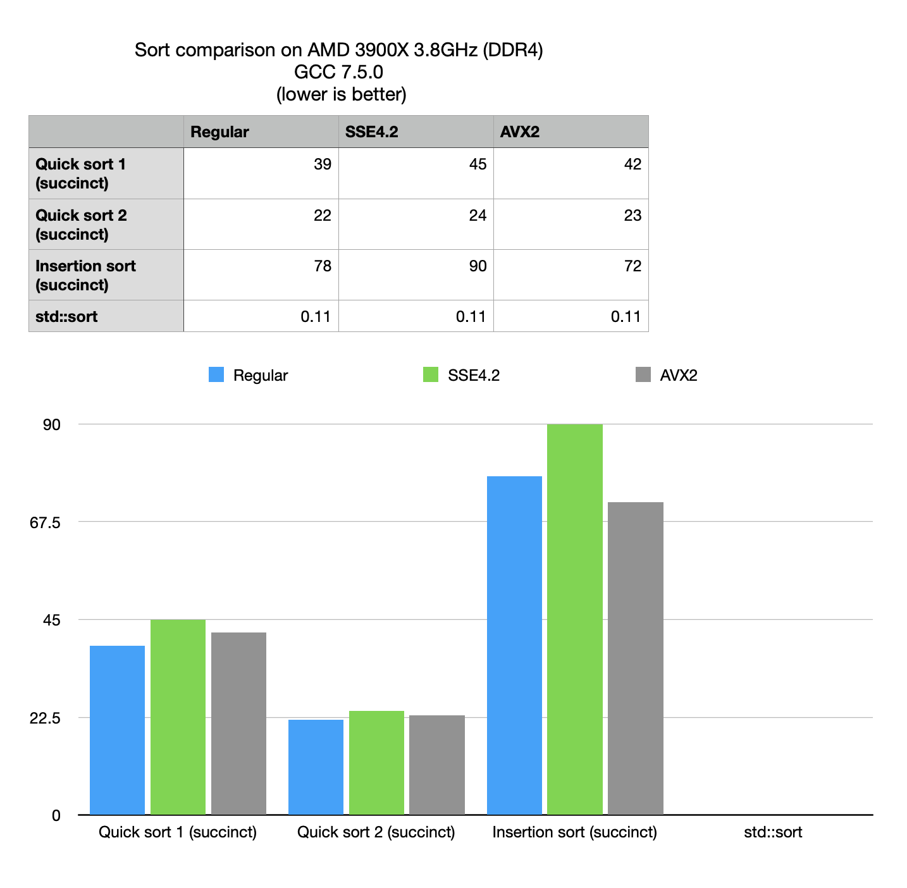

Technical notes on sorting of compressive string vectors.
Anatoliy Kuznetsov, Sept, 2022. (based on BM v.7.13.4Introduction
BitMagic v.7.13.4 implements new methods to fast swap of bits in compressive bit-vectors and swap of elements in compressive containers (based on bit-vector functinality).
bm::bvector<>:::swap(size_type idx1, size_type idx2);
This new functionality is better compared to external implementation of bit values (swap via get/set operations), because it takes into account localities of indexes and properties of compressed bit-vectors.
BitMagic now provides swap() methods for its succinct data vectors. BM succinct structures use bit-slicing approach, to represent vectors as collections of bit-vectors.
Swap is a building block for sorting (and shuffling) algorithms. This technical note studies characteristics of sorting on succinct data structures based on the new swap() method. Here we measure memory footprint, sorting speed and how it compares to a non compressive approach.
Experiment details
Full source code for this experiment is available in strsvsample09.cpp part of the
BM distribution. https://github.com/tlk00/BitMagic/tree/master/samples/strsvsample09.
In this small experiment we generate a set of strings, with frequent common prefixes and random numbers with some repeated values (in hundreds). Under these conditions the test generates a mixture of compressed and uncompressed bit-vectors. In our view this set is sufficiently characteristic of many real-life cases to be useful (for a synthetic benchmark).
The generated set contains a modest number of more than 800 thousands strings, which will be sufficient not to fully fit into CPU cache (for now not taking into account future CPU models with extra large 3D 3rd level cache).
Notes on memory consumption
Succinct::str_sparse_vector<> uses next compression techniques:
- Bit-slicing (also known as bit-wise transpose) - each bit in the consecutive vector of strings is loaded into its own bit-vector, isolating frequent bits. Bit-vectors are able to compress it better using a variant of RLE, since distribution of bits in the strings are not random.
- Characters remapping, where frequent characters receive more optimal codes (lower total number of bits) (variant of Hamming code). Remapping is complementary to bit-slicing, because it can reduce both number of bit-vectors in the set and enthropy in each individual vector.
BitMagic provides methods for accurate profiling of memory consumption in succinct data structures, so we can measure the compression efficiency. For STL we don’t have the luxury, but it is relatively easy to write some approximate profiling to compare. Note that both methods do not account for heap fragmentation, but for simple benchmarking cases it should not be a significant issue. In real life though, heap fragmentation of non-compressive structures like STL can be significantly higher than succinct vectors of BitMagic (or any other implementation of compressive data structures).
In our synthetic case BM has 13x advantage over STL in RAM consumption.
Sorting
What if we need to sort this compressive data set?
BitMagic succinct vectors are great for searching (everything is a bit-vector concept is good for that)
but random element access can insure a significant runtime penalty, because vector
elements have to be reassembled out of bit-vectors (potentially compressed).
Would it be prohibitively expensive?
Case example implements several variants of sorting: two variants of quick sort and insertion sort.
The fastest variant is here below.
void quicksort2(str_sv_type& strsv, int first, int last)
{
using stype = str_sv_type::size_type;
int i, j, pivot;
// fixed size for simplicity (in prod code needs dynamic buffer handling)
static str_sv_type::value_type pivot_buf[128];
while (first < last)
{
pivot = i = first;
j = last;
// save the pivor to re-use it in strsv.compare(..)
strsv.get(stype(pivot), pivot_buf, sizeof(pivot_buf));
while (i < j)
{
while((i < last) && (strsv.compare(stype(i), pivot_buf) <= 0))
++i;
while(strsv.compare(stype(j), pivot_buf) > 0)
--j;
if (i < j)
strsv.swap(stype(i), stype(j));
} // while
strsv.swap(stype(pivot), stype(j));
quicksort2(strsv, first, j-1);
first = j+1; // tail recursion
} // while
}
This variant above uses two BitMagic specific optimizations. First it uses a compare() method between a value and element of a succinct vector to minimize random extraction (pet peeve of BitMagic). Please note use of a “static” fixed size buffer for the value. Obviously in production code it has to be reworked.
 
Performance optimizations notes
- Use of custom comparison functions makes the biggest impact.
- No significant SIMD advantage, both due to the nature of the problem (random access does not vectorize well) and because latest BitMagic includes extensive optimizations for regular non-SIMD versions of the algorithms.
- Insertion sort performs worse than quick sort
Compressive quick sort vs standard sort
The numbers from the benchmark show that compressive sort is hundred times slower than non-compressive search, but at the same time compressive space can offer 10x advantage in used RAM. In the light of this observation it boils down to certain practical use cases, where compressive search may be useful.
- Situations with RAM pressure: in WebAssembly programs or embedded programming.
- As an alternative to sorting through the disk, which can also be hundreds times slower. This use case is also important in the light of parallel, many core programming approaches to sort, should significantly improve the succinct sort while over the disk sort is largely bounded by the I/O limitations.